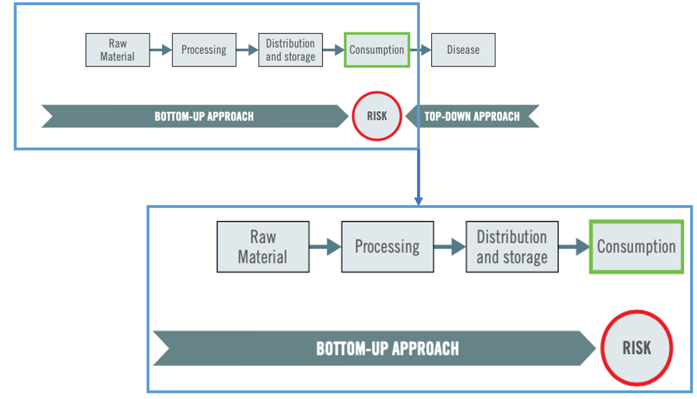
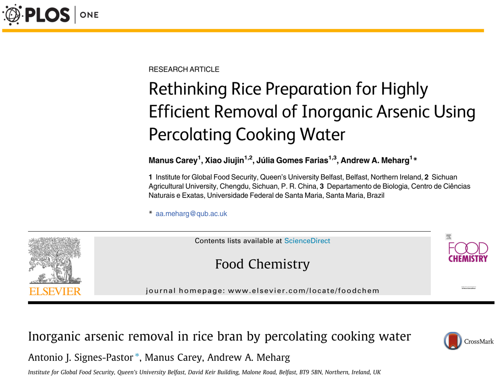
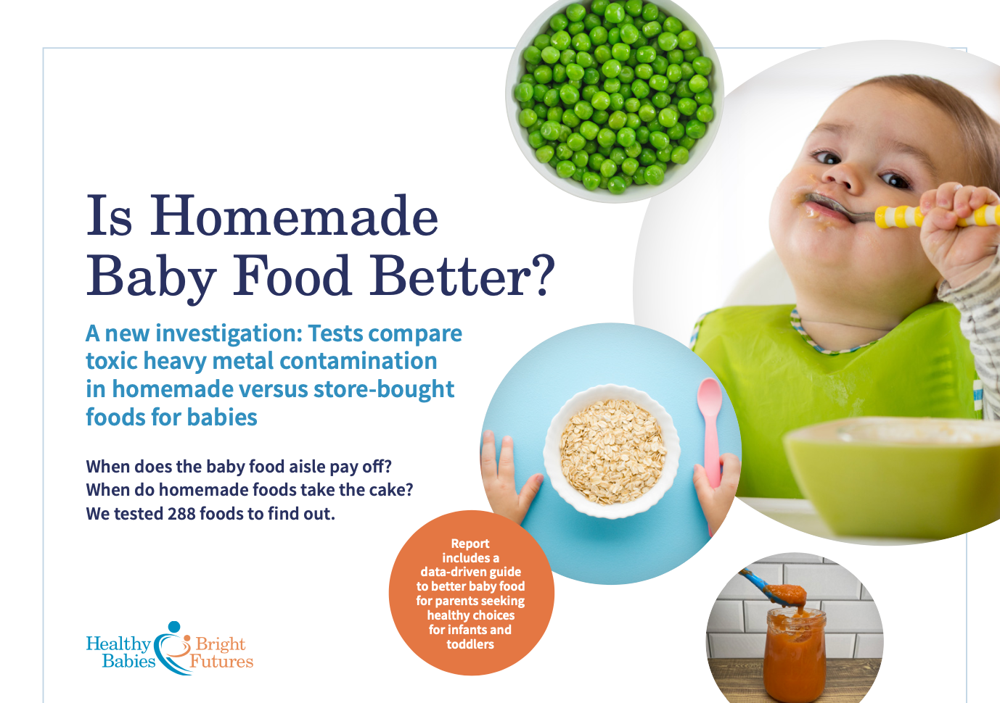

Chapter 4 Approach
4.1 Bottom-up Approach

4.1.1 Raw material
Metals have a particular ability to accumulate in foods as they are not subject to traditional biodegradation processes. Instead, they are readily absorbed by sediments and biomagnified through the food chain (de Paiva et al., 2019).
4.1.1.1 Vegetables - Arsenic
Figure 1: Arsenic concentrations in vegetables from West Bengal India (Signes-Pastor et al., 2008c).

4.1.1.2 Rice - Arsenic

Cultivation in fooded paddy fields - inorganic arsenic mobilization (Signes-Pastor et al., 2007).

Arsenic in taken up by the rice plants through pathways for nutrients:
Arsenite through silicon pathway – highly efficient in rice plant.
Arsenate through phosphate transporter.

Brown rice generally contains higher arsenic concentrations than polished/white rice.
Rice bran (Pericarp & Aleurone) extremely high iAs content. Superfood, popular ingredient in health-added products and high nutritional content.

4.1.1.3 Rice products - Arsenic


Figure 2: Inorganic arsenic concentrations in rice-based products from the UK market (Signes-Pastor et al., 2016)


4.1.1.4 Legislation
Table 1: Proposed and existing inorganic arsenic, lead standards
| Metal | Group.or.agency | Standard |
|---|---|---|
| Inorganic arsenic | Healthy Babies Bright Futures | No measurable amount in baby foods |
| Consumer Reports | 3 ppb | |
| FDA | 10 ppb for bottled water 100 ppb in infant rice cereal | |
| EPA, EU, WHO | 10 ppb for drinking water | |
| EC | 100 ppb (for infant/ child foods) 200 ppb (for adult foods) | |
| Lead | Environmental Defense Fund | 1 ppb (especially for baby foods) |
| Consumer Reports | 1 ppb in fruit juices | |
| American Academy of Pediatrics (AAP) | 1 ppb for water fountains in schools | |
| FDA | 5 ppb for bottled water 50 ppb for juice 100 ppb for candy | |
| WHO | 10 ppb provisional guideline | |
| EPA | 15 ppb for drinking water (action level) | |
| EU | 20 ppb for infant formula and follow-on formula | |
| Cadmium | Healthy Babies Bright Futures | No measurable amount in baby foods |
| Consumer Reports | 1 ppb in all fruit juices | |
| WHO | 3 ppb for drinking water | |
| EPA/ FDA | 5 ppb for drinking water | |
| EU | 5-20 ppb for infant formula | |
| Mercury | Healthy Babies Bright Futures | No measurable amount in baby foods |
| EPA | 2 ppb for drinking water |
EC, European Commission; EPA, Environmental Protection Agency; EU, European Union; FDA, Food and Drug Administration; ppb, parts per billion; WHO, World Health Organization. (Bair, 2022)
4.1.2 Processing and cooking
Figure 3: Dehusking and rice cooking in excess of water reduces arsenic burden (Raab et al., 2009; Signes-Pastor et al., 2008b, 2008a; Signes-Pastor2007?)

Inorganic arsenic removal in rice bran by percolating cooking water
Figure 4: Rice and rice bran processing with percolating water reduces arsenic burden (Carey et al., 2015; Signes-Pastor et al., 2017a)

4.1.3 Distribution and storage


4.1.4 Consumption
Arsenic bioaccessibility refers to the fraction of arsenic that dissolves during the gastrointestinal digestion and is available for absorption during transit through the small intestine to enter the blood stream (Signes-Pastor et al., 2012).
Arsenic bioavailability refers to the fraction of arsenic that enters the blood stream, and thus becomes harmful to the human body (Signes-Pastor et al., 2012).


4.3 Strategies to reduce exposure
4.3.1 Regulations
Figure 5: Impact of the EU regulation on arsenic in rice-based products for infants and young children (Carey et al., 2018; Signes-Pastor et al., 2017b, 2017a)

Strategies taken by manufactures to reduce iAs in rice-based infants’ products:
i) Pure rice products, such as crackers, it appears that low iAs has been specifically sourced for formulation;
ii) Appears to be a lower representation of pure rice products being produced/available and;
iii) To blend rice with other gluten free grains (i.e. maize, oats, quinoa, etc.) to dilute the amount of rice and thus the iAs content. Increase presence of mixed multi-grain products and mueslis for infants (Carey et al., 2018; Signes-Pastor et al., 2017b, 2017a).
